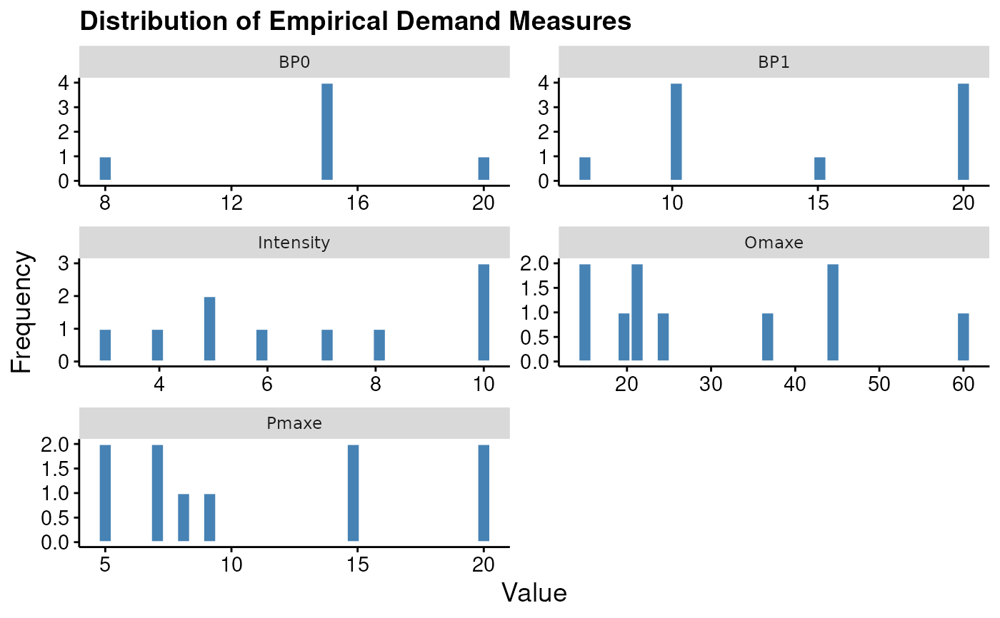
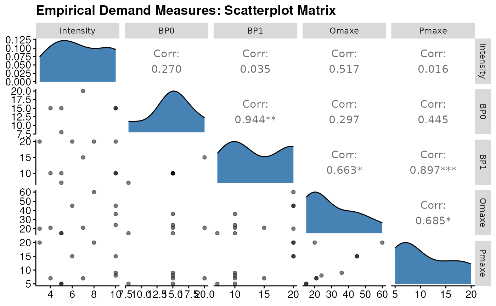

S3 Methods for beezdemand_empirical Objects
Source:R/empirical-methods.R
beezdemand_empirical_methods.RdMethods for printing, summarizing, and visualizing objects of class
beezdemand_empirical created by get_empirical_measures().
Arguments
- x, object
A
beezdemand_empiricalobject- ...
Additional arguments passed to plotting functions
- type
Character string specifying plot type. Options:
"histogram" (default) - Faceted histograms showing distribution of each measure
"matrix" - Scatterplot matrix showing pairwise relationships between measures
Details
Print Method
Displays a compact summary showing the number of subjects analyzed and a preview of the empirical measures table.
Summary Method
Provides extended information including:
Data summary (subjects, zero consumption patterns, completeness)
Descriptive statistics for each empirical measure (min, median, mean, max, SD)
Missing data patterns
Plot Method
Creates visualizations of empirical measures across subjects.
Histogram type (default):
Six-panel faceted plot showing distribution of each measure
Helps identify central tendencies and outliers
Uses modern beezdemand styling
Matrix type:
Scatterplot matrix (pairs plot) showing relationships between measures
Useful for identifying correlated demand metrics
Lower triangle: scatterplots with smoothed trend lines
Diagonal: density plots
Upper triangle: correlation coefficients
Examples
# \donttest{
data(apt, package = "beezdemand")
emp <- get_empirical_measures(apt)
# Print compact summary
print(emp)
#> Empirical Demand Measures
#> =========================
#>
#> Call:
#> get_empirical_measures(data = apt)
#>
#> Data Summary:
#> Subjects: 10
#> Subjects with zero consumption: Yes
#> Complete cases (no NAs): 6
#>
#> Empirical Measures:
#> id Intensity BP0 BP1 Omaxe Pmaxe
#> 19 10 NA 20 45 15
#> 30 3 NA 20 20 20
#> 38 4 15 10 21 7
#> 60 10 15 10 24 8
#> 68 10 15 10 36 9
#> 106 5 8 7 15 5
#> 113 6 NA 20 45 15
#> 142 8 NA 20 60 20
#> 156 7 20 15 21 7
#> 188 5 15 10 15 5
# Extended summary
summary(emp)
#> Extended Summary of Empirical Demand Measures
#> =============================================
#>
#> Data Overview:
#> Number of subjects: 10
#> Complete cases: 6 (60.0%)
#>
#> Descriptive Statistics for Empirical Measures:
#> -----------------------------------------------
#>
#> Intensity:
#> Min: 3.00
#> Median: 6.50
#> Mean: 6.80
#> Max: 10.00
#> SD: 2.62
#>
#> BP0:
#> Min: 8.00
#> Median: 15.00
#> Mean: 14.67
#> Max: 20.00
#> SD: 3.83
#> Missing: 4 (40.0%)
#>
#> BP1:
#> Min: 7.00
#> Median: 12.50
#> Mean: 14.20
#> Max: 20.00
#> SD: 5.35
#>
#> Omaxe:
#> Min: 15.00
#> Median: 22.50
#> Mean: 30.20
#> Max: 60.00
#> SD: 15.40
#>
#> Pmaxe:
#> Min: 5.00
#> Median: 8.50
#> Mean: 11.10
#> Max: 20.00
#> SD: 5.88
# Histogram of measure distributions
plot(emp)
#> Warning: Removed 4 rows containing non-finite outside the scale range (`stat_bin()`).

# Scatterplot matrix
plot(emp, type = "matrix")
#> Warning: Removed 4 rows containing missing values
#> Warning: Removed 4 rows containing missing values or values outside the scale range
#> (`geom_point()`).
#> Warning: Removed 4 rows containing non-finite outside the scale range
#> (`stat_density()`).
#> Warning: Removed 4 rows containing missing values
#> Warning: Removed 4 rows containing missing values
#> Warning: Removed 4 rows containing missing values
#> Warning: Removed 4 rows containing missing values or values outside the scale range
#> (`geom_point()`).
#> Warning: Removed 4 rows containing missing values or values outside the scale range
#> (`geom_point()`).
#> Warning: Removed 4 rows containing missing values or values outside the scale range
#> (`geom_point()`).

# }